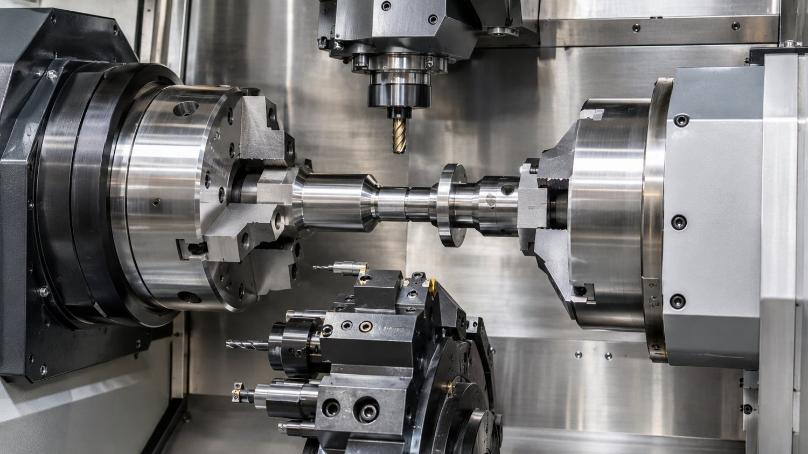
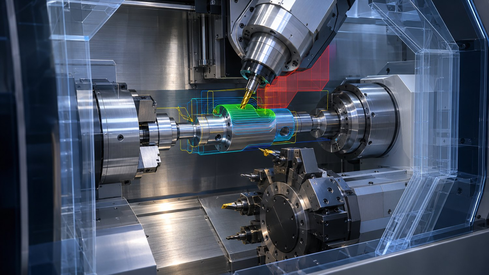

Modern turn-mill machines are among the most capable CNC manufacturing platforms available. By combining turning, milling, drilling and other machining processes within a single machine, they can significantly reduce component handling, setup times and manufacturing lead times.
However, this flexibility introduces considerable complexity when developing CNC post processors and accurate machine simulation environments.
Whilst machine simulation for conventional three-axis and five-axis milling is relatively well established, turn-mill simulation presents a different set of engineering challenges.
The difficulty is not simply the number of axes involved. It is the way in which machine components interact, change function and operate throughout the manufacturing process.
1. More Than Just Additional Axes
A conventional five-axis milling machine typically consists of three linear axes and two rotary axes, arranged in a defined kinematic configuration.
Although individual machine designs vary considerably, the relationship between the cutting tool and the workpiece is generally consistent throughout the machining process.
A modern turn-mill machine may incorporate:
- Main and sub-spindles
- Programmable C-axis positioning
- B-axis milling heads
- Y-axis machining capability
- Upper and lower tool turrets
- Driven tooling
- Programmable sub-spindle positioning
- Multiple independent machining channels
Each of these components must be represented correctly within the machine's kinematic structure.
However, accurately modelling their physical movement is only the starting point. The simulation must also account for how these components are used during different stages of the machining process.
2. Machine Components That Change Function
One of the fundamental differences between milling and turn-mill simulation is that machine components can change their operational function during a program.
Consider the main spindle of a typical turn-mill machine.
During conventional turning, the spindle rotates continuously at a programmed speed. During indexed milling, the same spindle may become a controlled positioning axis. During simultaneous machining, it may operate as an interpolated rotary axis in conjunction with other machine axes.
These are three fundamentally different operating conditions involving the same physical component.
The CNC post processor must manage the transitions between these conditions, including the appropriate spindle commands, axis modes and machine-specific control functions.
An accurate simulation environment must represent not only the resulting movement but also the relevant changes in machine state.
A geometrically correct machine model alone cannot achieve this.
3. The Workpiece Does Not Always Stay in the Same Place
On a conventional milling machine, the workpiece generally remains attached to a fixture or rotary table throughout the machining process.
On a turn-mill machine equipped with a sub-spindle, the workpiece may be transferred between spindles during the NC program.

A typical transfer process can involve:
- Spindle orientation or synchronisation
- Sub-spindle approach
- Chuck opening and closing
- Workpiece gripping
- Parting-off or release from the main spindle
- Sub-spindle withdrawal
- Subsequent machining on the opposite end of the component
From a simulation perspective, this introduces a significant additional requirement: the relationship between the workpiece and the machine must change dynamically.
The simulation needs to represent when the component is held by the main spindle, when it is supported by both spindles and when it becomes associated with the sub-spindle.
The remaining stock and the transferred component may also need to be represented separately.
Incorrect handling of these relationships can result in misleading material removal, incorrect component positioning or collisions that are not accurately represented.
Spindle transfers are also highly machine-specific. Chuck operation, synchronisation requirements, gripping positions and permitted movements can vary considerably between manufacturers and control systems.
4. Multiple Turrets and Independent Machining Channels
Some of the most complex turn-mill machines incorporate multiple tool carriers capable of operating independently or simultaneously.
For example, an upper B-axis milling head may be machining a component whilst a lower turret performs a turning operation.
In this situation, simulation must consider more than the movement of an individual cutting tool.
It must account for the relationship between:
- Both tool carriers
- Active and inactive tools
- Main and sub-spindles
- The workpiece and remaining stock
- Machine structures
- Synchronisation between machining channels
A toolpath that is individually collision-free may become unsafe when another machining channel is operating simultaneously.
Accurately representing this behaviour requires appropriate sequencing and synchronisation information, rather than simply displaying two independent toolpaths.
This becomes particularly important when optimising cycle times through balanced or overlapping machining operations.
5. The Importance of Post-Generated Machine Movements
CAM toolpaths primarily describe the movements required to manufacture a component.
However, many of the movements required to operate a turn-mill machine are generated by the CNC post processor rather than directly by the machining toolpath.
Examples include:
- Tool change positioning
- Turret indexing
- B-axis repositioning
- Sub-spindle approach and withdrawal
- Spindle transfer sequences
- Safe retract movements
- Chuck and workholding operations
- Parts catcher and bar feeder sequences
Depending on the machine and its control system, some of these actions may also be performed internally by CNC cycles, macros or machine control logic.
These movements are often amongst the most safety-critical parts of an NC program.
If a simulation environment does not receive or correctly interpret the relevant post-generated movements, the displayed machining process may differ significantly from the behaviour of the physical machine.
This is one of the reasons why successful CAM toolpath simulation should not automatically be considered verification of the final NC program.
6. Tooling Introduces Further Complexity
Turn-mill machines can accommodate a particularly diverse range of tooling within a single machining environment.
A typical machine may use conventional turning tools, axial and radial driven tools, milling cutters, boring bars, parting tools and specialised toolholders.
Each tool type introduces different requirements for orientation, positioning and collision detection.
On a B-axis turn-mill machine, for example, a turning tool may be presented to the workpiece at different head angles depending on the machining operation.
The tool orientation, cutting edge position, tool offsets and machine kinematics must all remain consistent.
Accurate representation of the complete tooling assembly is equally important. A cutting edge may have sufficient clearance whilst the toolholder, adjacent turret tooling or milling head itself interferes with another machine component.
The quality of the tooling data can therefore have a direct impact on the effectiveness of the simulation.
7. Machine Simulation and the CNC Post Processor Must Work Together

Effective turn-mill machine simulation requires considerably more than a detailed 3D model of the machine.
The complete manufacturing environment needs to bring together several elements:
- Accurate machine geometry
- Correct machine kinematics
- Axis limits and movement capabilities
- Tooling and workholding definitions
- Machine-specific CNC post processor behaviour
- Workpiece positioning and transfer information
- Machining channel synchronisation, where applicable
The CNC post processor plays a particularly important role in connecting the CAM programming environment with the physical machine.
A post processor that produces working NC code is not necessarily configured to provide all the information required by a machine simulation environment.
Depending on the CAM system and its simulation architecture, existing post processors may require additional development to support accurate machine positioning, component movement and operational state changes.
This is particularly relevant when introducing machine simulation to an existing manufacturing workflow.
8. Preparing for the Future of Turn-Mill Simulation
As CAM systems such as Autodesk Fusion continue to evolve, increasingly sophisticated machine simulation capabilities offer significant potential benefits for manufacturers operating complex turn-mill machines.
These may include improved visibility of machine movements, earlier identification of potential interference, more efficient program development and reduced time spent proving out new components.
However, the effectiveness of these capabilities will depend on the machine configurations supported, the information available to the simulation environment and the quality of the associated post processor implementation.
Manufacturers considering future machine simulation requirements can benefit from ensuring that their existing CNC post processors are well structured, accurately represent machine behaviour and are supported by reliable machine documentation and proven NC programs.
These foundations can help reduce the engineering effort required when introducing additional simulation capabilities.
Conclusion
Turn-mill machine simulation is not simply five-axis milling simulation with additional machine components.
It introduces dynamic workpiece relationships, changing spindle functions, multiple machining channels, complex tooling arrangements and machine-specific operational sequences.
Successfully representing these behaviours requires a detailed understanding of both the physical machine and the CNC post processor controlling it.
Machine simulation is a valuable engineering tool, but its effectiveness depends on the accuracy and completeness of the information it receives. Appropriate machine-specific validation and controlled prove-out remain essential.
Specialist Turn-Mill Post Processor Development
Cam Post Solutions provides specialist CNC post processor development and machine simulation services, with extensive experience across complex multi-axis, turn-mill and Swiss-type CNC machining environments.
Supporting Autodesk Fusion, FeatureCAM and PowerMill, we help manufacturers develop reliable, machine-specific CAM solutions tailored to their manufacturing requirements.
If you are looking to develop a new turn-mill post processor, improve an existing implementation or prepare your manufacturing environment for enhanced machine simulation capabilities, contact Cam Post Solutions to discuss your requirements.
Explore turn-mill services →